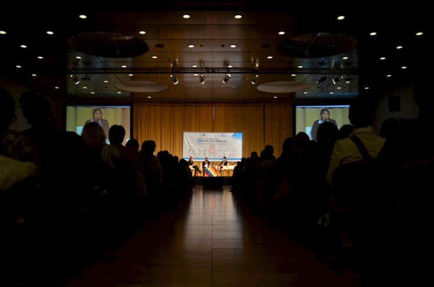

Auditorio da Escola
Foi construida em 1982
Um auditório é um recinto destinado a várias atividades. O público comparece a este local para contemplar uma expressão artística, como uma peça de teatro, uma apresentação de dança, uma peça musical ou um monólogo.